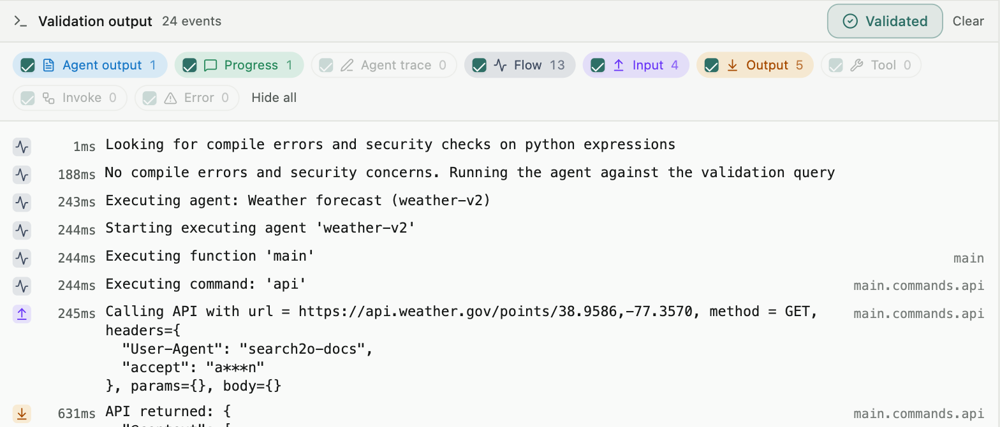
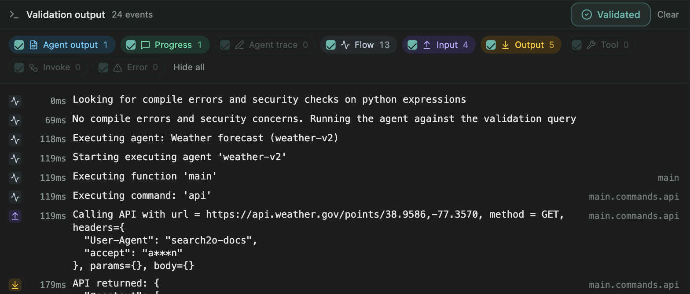

Validation and publishing
A draft must be validated before it can be published. Validation checks the draft, then runs the draft against the validation query and shows the execution trace.
Checks
Search2o Cloud checks the JSON: the schema, every Python expression for unsafe constructs, the rules about where commands may appear, and that every referenced function and profile exists. If an invoke names an agent literally, the cloud also checks that the agent exists. Each error is reported with the path to the command that caused the error.
The validation run
The agent server then runs the checked draft against the validation query, in the draft's own conversation, with tracing on. The trace shows every command: what the command was called with, what the command returned, each LLM request and response, and each tool call. The trace command adds your own entries. As in any Python program, some errors show only at runtime. The validation run is mandatory for that reason.


Validation checks that the agent completes without errors. Validation does not judge whether the answer was right; the trace is there for that judgement. An agent that pauses on ask during validation is answered in the validation view, and the agent then continues.
Publishing
Once validation succeeds, the draft can be published. The published agent becomes visible to all developers and runnable by users. The draft is retired. Any edit to a draft clears the draft's validation, so a changed draft must be validated again before publishing.
Each publish creates a new version of the agent. Previous versions are kept for three months and can be viewed from the agent's page.
Describing the agent
After publishing, describe the agent in plain English so that search can find the agent. See Describing an agent. An agent with no description can still be run by name and invoked by other agents. Such an agent simply cannot be found by search.